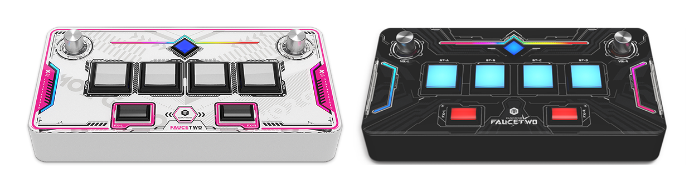
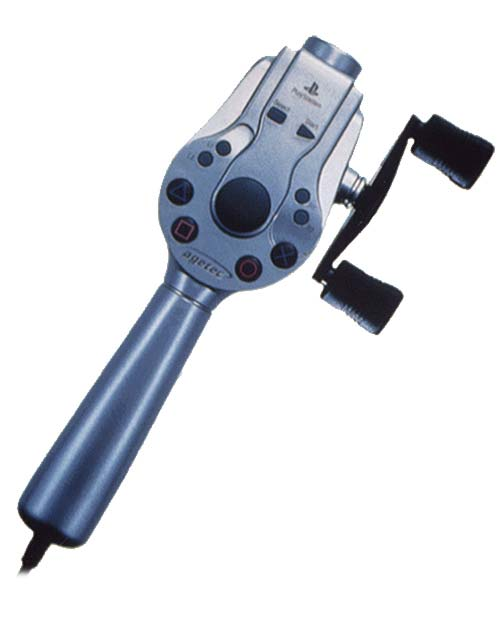
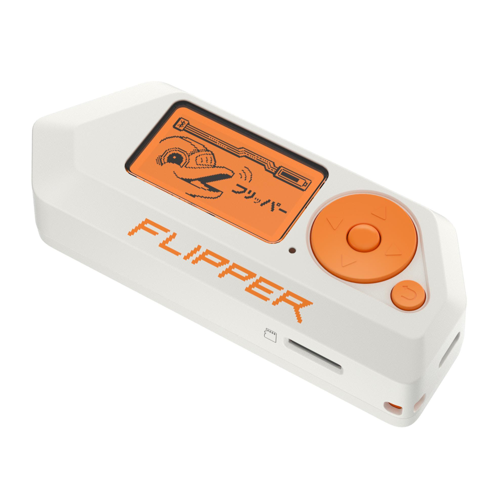
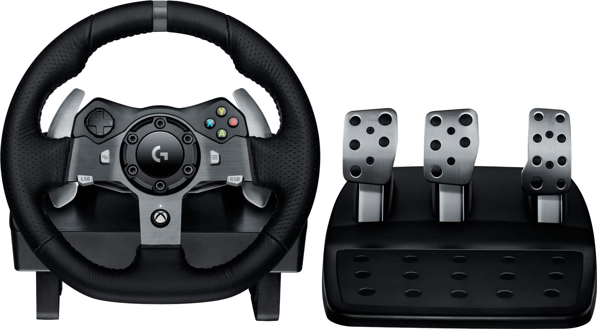

A webpage that shares some of the tech-related stuff I want.
Sound Vortex Controller
Why?
Getting into the Game; Heard a lot of good about the game and would want to have a true experience when I try it.
Knobsss; Using knobs to play is pretty cool.

Fishing Controller
Why?
Neat; Fishing with an actual fishing rod as a controller seems like it'd be really cool.
Playing with my Dad; My dad likes fishing in Animal Crossing so maybe he'd like this too.
Use in Fishing Games; I have some fishing games already and am curious if I could tinker with the controller to get it to work on other platforms.

Flipper Zero
Why?
Compact; Small enough to carry around.
Messing Around; I'd want to see what I could get it to work on.
Showing Off; It would be a cool thing to show off to other people.

Racing Controller
Why?
Influenced; One of the youtube channels I watch has a member that is a racing fan so that's where a lot of my interest in it comes from.
Getting Better at Driving; Probably doesn't translate but I'd be curious if there are any changes in how I drive on the road if I start using one and playing more racing games.
Improving at Games; I want to see if I could get better at racing games.

VR Headset
Why?
Interesting Games; Beat Saber, Tetris Effect, and the Resident Evil games would be cool to play.
Never Experienced; I've never really tried VR before besides some that use your phone and a mask but those generally weren't good or immersive.